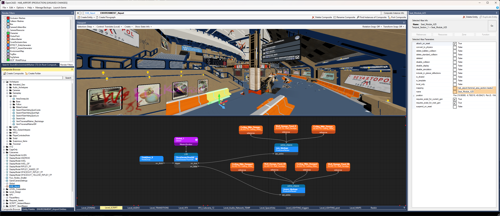

Welcome!
OpenCAGE is a community-created open-source modding toolkit for the game Alien: Isolation, intended to offer functionality that was originally available within CAGE (the Creative Assembly Game Editor).
While CAGE was never publicly released, years of reverse engineering efforts have resulted in a decent feature set for the community tools — it's possible to do a whole variety of things including asset import/export, level script modification/creation, core configuration edits, NPC and behaviour tweaks, weapon mods, and more!
New here? Grab the tools from Steam, then start with the Scripting Introduction — everything else is broken down into sections below. Don't forget to join the Discord to get tips and tricks from the community, and share any mods you're working on!

Start here if you're new to Cathode scripting, multiple installs, the Viewport, launching the game, Options, or backups — plus building a level, porting content between levels, and creating levels of your own.

Dedicated editors for function entities that need more than the node graph — timelines, trigger sequences, bindings, and character accessory sets.
Tools for editing engine configurations, skybox stars, material remaps, character AI trees, and the game's on-screen text.
Editors for level and game resources — meshes, UI.PAK, materials, textures, animation clips and trees, blend sets, and sound.
Deep-dive catalogues for scripting APIs, AI behaviour tree nodes, and animation tree nodes.